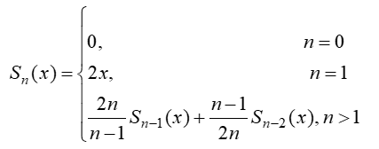
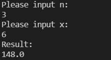
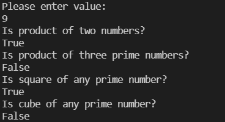

Лабораторна робота 1.
Використання рекурсії для організації повторювальних процесів.
Варіант 20
Автор
| ПІБ: | Семечненко Тарас Олександрович |
| Курс: | 4 |
| Група: | ІПЗ-42 |
| Рік навчання: | 2021-2022 |
Зміст
Мета
Умова задачі
Структура програми
Обгрунтування вибору середовища та мови програмування
Код програми
Скрін-шоти
Аналіз достовірності результатів
Висновки
Мета
Сформувати декларативне мислення в галузі програмування завдяки використанню чистих функцій, рекурсій замість циклів, запобіганню даних, що змінюються. Опанувати застосування рекурсивних функцій для обчислювальних процесів.
Умова задачі
Задача 1
Увести з клавіатури ціле число n та дійсне x. Обчислити значення поліному від x степені n за рекурентним співвідношенням:
Реалізувати рекурсивний варіант розв'язку задачі. Визначити глибину рекурсії.
Задача 2
Використовуючи рекурсивні функції, перевірити,
чи можна задане з клавіатури натуральне число представити у вигляді:
а) добутку двох простих чисел;
б) добутку трьох простих чисел;
в) квадрата будь-якого простого числа;
г) куба будь-якого простого числа
Структура програми
Блок-схема першого завдання

Блок-схеми другого завдання
Блок-схема функції, яка визначає чи є число простим:

Блок-схема функції, яка визначає скільки простих дільників має число та функції які перевіряють чи має число 2 та 3 простих дільників:

Блок схема функцій, які перевіряють чи є число квадратом та кубом простого числа:

Блок-схема програми, яка зчитує число з консолі та перевіряє чи має воно 2 або 3 натуральні дільники, чи є воно квадратом або кубом простого числа:

Обгрунтування вибору середовища та мови програмування
Середовище програмування: VS Code
Середовище обране через:1) Це моє основне середовище в якому програмую, і його можна використовувати майже для будь-якої мови програмування.
2) Має всі необхідні функції для програмування і працює набагато швидше в порівнянні з іншими IDE.
Мова функціонального програмування: Haskell
Мова обрана через:1) Це одна з самих популярних та нових функціональних мов програмування.
2) Дуже багата документація.
3) Мова має дуже приємний та простий синтаксис.
Код програми:
Завдання 1:
Завдання 2:
Посилання на код 1 завдання
Посилання на код 2 завдання
Скрін-шоти:
Результат виконання 1 програми:
Результат виконання 2 програми:
Аналіз достовірності результатів
Результати виконання першої програми співпадають з моїми розрахунками на калькуляторі
Результати виконання другої програми співпадають з розрахунками, так як число 9 є добутком двох простих чисал 3 * 3 і квадратом простого числа 3
Також для 2 завдання були розроблені тести, кожен з яких програма проходить успішно.
Висновки
В л.р. було виконано 2 завдання:
В завданні #1 була написана рекурсивна функція, що рахувала значення поліному при заданих значеннях n та x.
Завдяки мові haskell реалізація цього поліному була дуже простою і рішення зайняло лише 4 строки.
Однак було досить важко перевірити результати виконання програми при великих значеннях n.
В завданні #2 були реалізовані 4 функції:
а) чи є число добутком 2 простих чисел
б) чи є число добутком 3 простих чисел
в) чи є число квадратом простого числа
г) чи є число кубом простого числа
Всі вони були реалізовані рекурсивно. Для зменшення кількості коду я реалізував додаткові фукції,
наприклад, функція, яка перевіряє чи є число простим.
Також для 2 завдання були реалізовані тести, які перевіряють кожну з вище зазначених функцій.